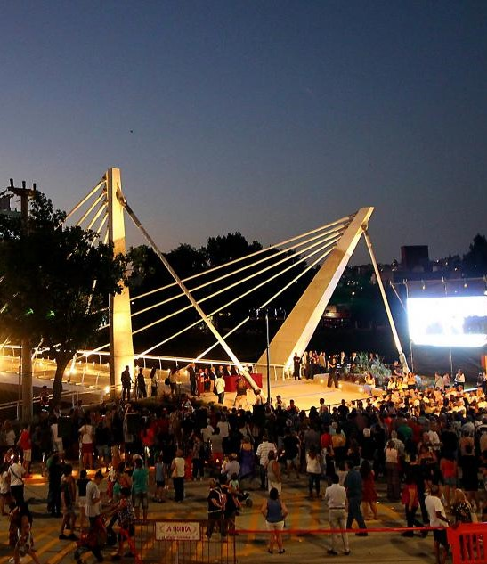
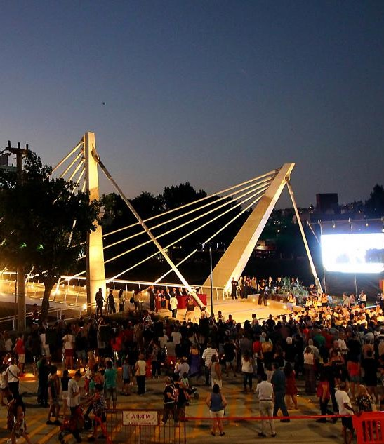
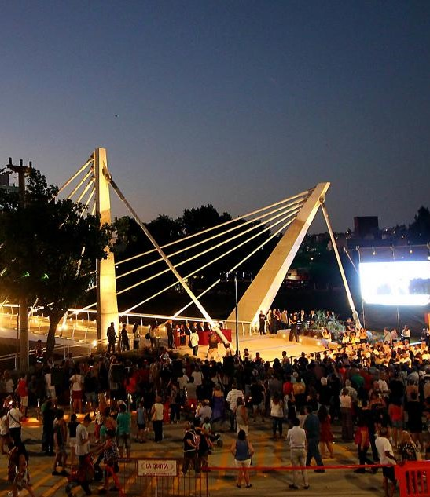

SUGERENCIAS
ACTIVIDADES TURISTICAS
HISTORIA
CONTACTO
Bienvenido a VILLA CARLOS PAZ
Todos tus destinos en uno
Mapa general de la ciudad
En este mapa podran ver los sitios mas interesantes para visitar en la ciudad.

 
